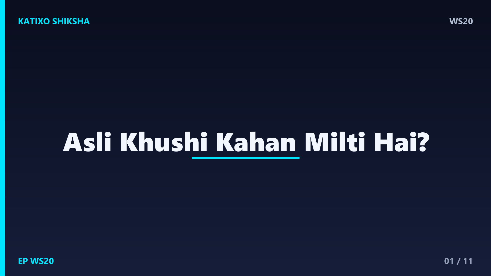
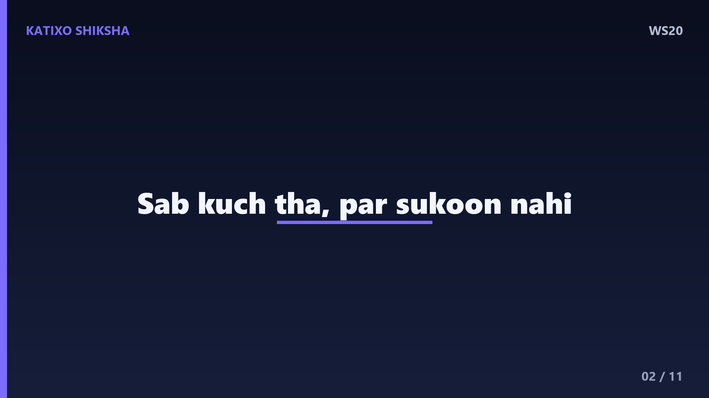
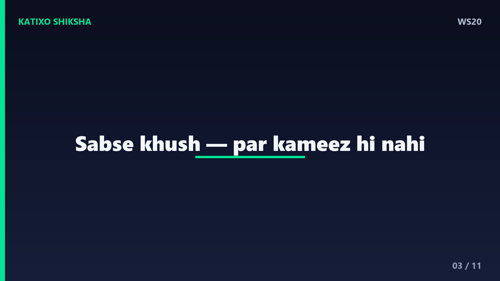
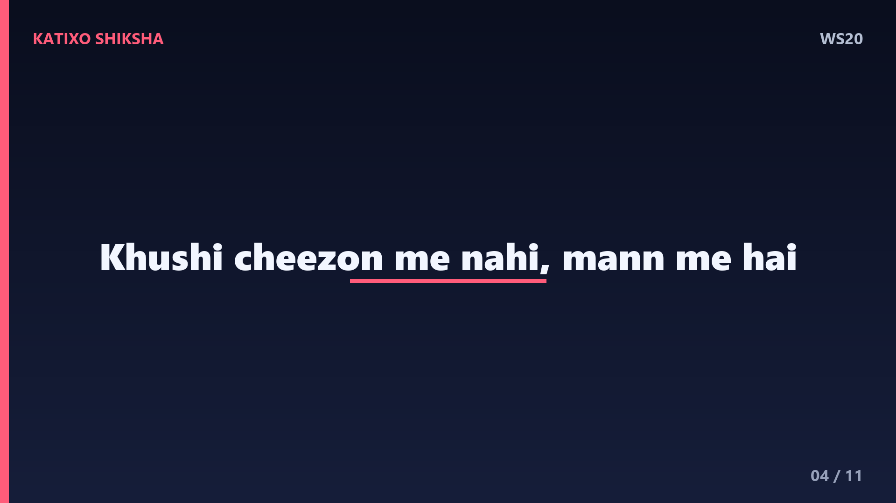
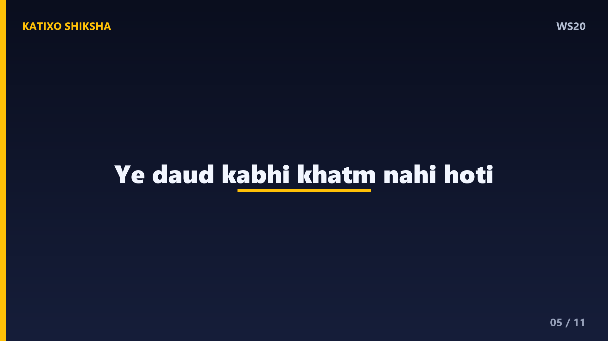
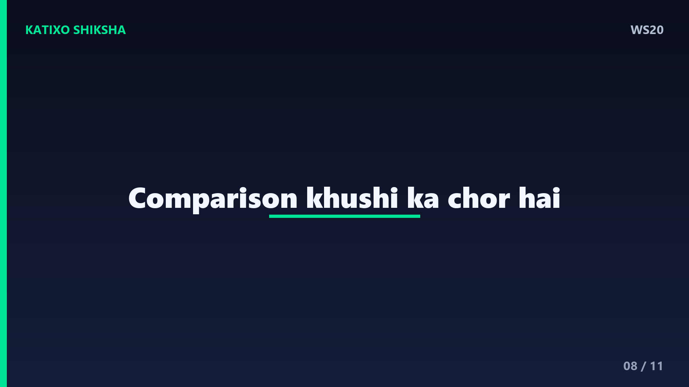
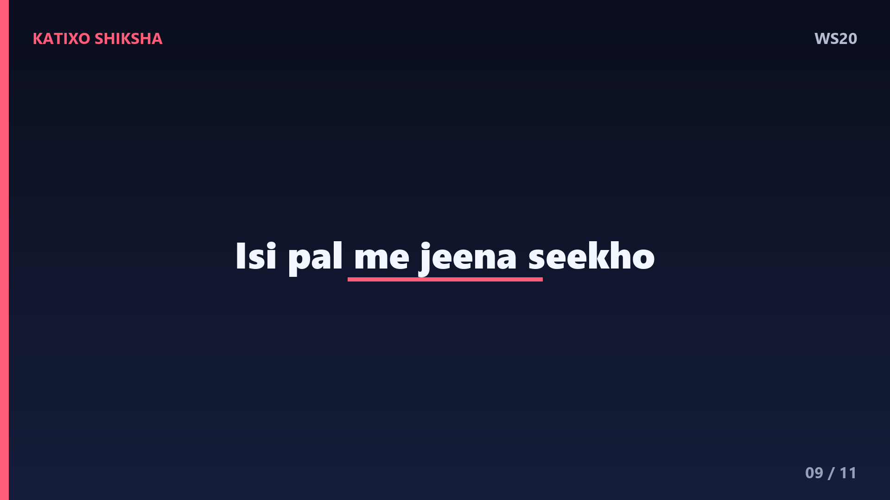
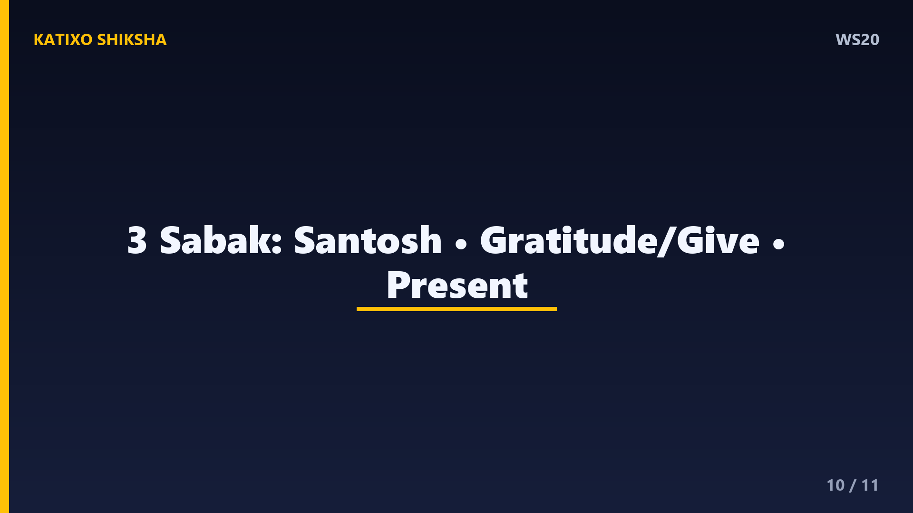
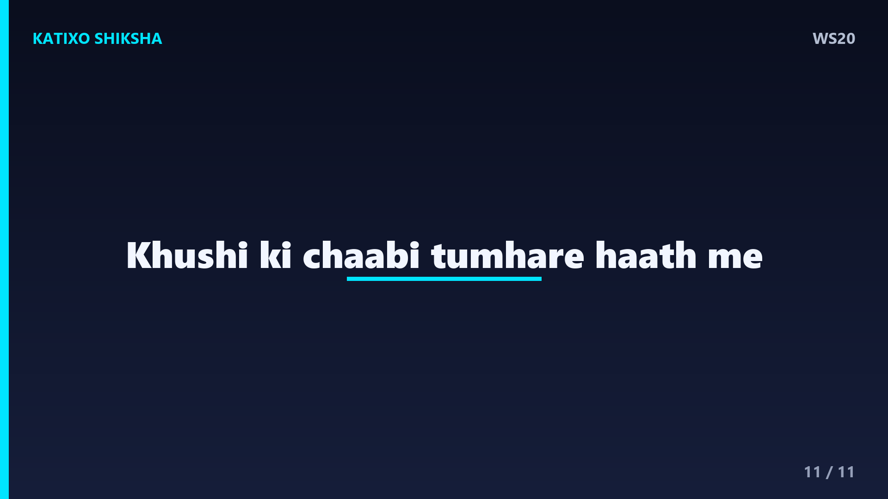

WS20 — Asli Khushi Kahan Milti Hai?

Slide 1दोस्तों, एक सवाल — क्या तुमने कभी सोचा है कि जो चीज़ हमें खुश करने वाली थी, उसे पाने के बाद भी मन खाली क्यों रह जाता है? नया phone, अच्छे marks, ज़्यादा पैसे — मिल भी जाएँ, तो थोड़ी देर में फिर वही बेचैनी। ये है Katixo KhojLab, और आज की कहानी है ज़िंदगी के सबसे बड़े सवाल पर — असली खुशी आखिर कहाँ मिलती है? चलो एक कहानी से इसका जवाब ढूँढते हैं।

Slide 2एक राजा था जो दुनिया का सबसे दुखी इंसान था। उसके पास महल, हीरे, हर सुख था, पर सुकून नहीं। उसने पूरे राज्य में ऐलान किया — जो मुझे खुश रहने का राज़ बताएगा, उसे आधा राज्य दूँगा। बड़े-बड़े विद्वान आए, पर कोई जवाब नहीं दे पाया। एक दिन एक फ़कीर आया और बोला — महाराज, खुशी का राज़ उस इंसान की कमीज़ में है जो दुनिया का सबसे खुश इंसान है। उसे पहन लो, तुम खुश हो जाओगे।

Slide 3राजा के सैनिक पूरी दुनिया में सबसे खुश इंसान को ढूँढने निकले। आखिरकार उन्हें एक किसान मिला जो खेत में गाना गाते हुए हँस रहा था, सबसे खुश। सैनिकों ने कहा — हमें तुम्हारी कमीज़ चाहिए, राजा बहुत पैसे देंगे। किसान ज़ोर से हँसा और बोला — पर भाई, मेरे पास तो कमीज़ ही नहीं है। सैनिक हैरान रह गए — दुनिया का सबसे खुश इंसान, और उसके पास पहनने को कमीज़ तक नहीं!

Slide 4जब ये बात राजा तक पहुँची, तो उसे सबसे बड़ी सीख मिली। उसे समझ आया कि खुशी चीज़ों में नहीं, मन की एक अवस्था में है। किसान के पास कुछ नहीं था, फिर भी वो खुश था, क्योंकि उसके मन में संतोष था। Lesson नंबर एक — खुशी कोई destination नहीं है जहाँ पहुँचकर रुक जाओगे। खुशी रास्ते में है, इसी पल में है, अगर तुम उसे महसूस करना सीख लो।

Slide 5Lesson नंबर दो — हम एक झूठे जाल में फँसे हैं जिसे कहते हैं hedonic treadmill. मतलब, हम सोचते हैं वो चीज़ मिल जाए तो खुश हो जाऊँगा। पर जैसे ही वो मिलती है, मन फिर अगली चीज़ माँगने लगता है। ये दौड़ कभी खत्म नहीं होती। असली खुशी तब आती है जब तुम बाहर की चीज़ों का पीछा करना छोड़कर, अंदर की शांति की तरफ़ मुड़ते हो। खुशी कमाने की चीज़ नहीं, महसूस करने की चीज़ है।
Slide 6अब एक practical technique — इसे कहते हैं gratitude, यानी कृतज्ञता. हर रात सोने से पहले तीन चीज़ें लिखो जिनके लिए तुम शुक्रगुज़ार हो — चाहे वो छोटी सी हो, जैसे गरम खाना या किसी की मुस्कान। Science कहती है कि रोज़ gratitude practice करने से दिमाग में खुशी के chemicals बढ़ते हैं। जब तुम जो है उसकी कद्र करना सीखते हो, तो जो नहीं है उसका दुख अपने आप कम हो जाता है।
Slide 7Technique नंबर दो — दूसरों को खुशी दो. ये ज़िंदगी का सबसे बड़ा राज़ है। जब तुम किसी की मदद करते हो, किसी के चेहरे पर मुस्कान लाते हो, तो जो सुकून तुम्हें मिलता है, वो किसी चीज़ से नहीं मिल सकता। Research भी कहती है कि देने वाले लोग लेने वालों से ज़्यादा खुश रहते हैं। आज किसी एक इंसान की बिना किसी स्वार्थ के मदद करके देखो — तुम्हें असली खुशी का स्वाद मिलेगा।

Slide 8एक ज़रूरी बात — comparison खुशी का सबसे बड़ा चोर है। जब तुम अपनी ज़िंदगी को किसी और की highlight reel से तोलते हो, तो तुम हमेशा हारोगे, क्योंकि हर कोई सिर्फ़ अपना अच्छा हिस्सा दिखाता है। अपनी journey किसी और से मत तोलो। अपने आज को अपने कल से तोलो — क्या मैं कल से थोड़ा बेहतर हुआ? बस यही सवाल तुम्हें खुश और आगे बढ़ने वाला बनाएगा।

Slide 9दोस्तों, खुशी का एक और राज़ है — present में जीना. हम या तो बीते कल के पछतावे में जीते हैं, या आने वाले कल की चिंता में। पर ज़िंदगी सिर्फ़ इसी पल में है। जब तुम खाना खाओ, तो बस खाना खाओ। जब किसी से बात करो, तो पूरे दिल से करो। इस पल में पूरी तरह मौजूद रहना — इसे कहते हैं mindfulness — और यही असली खुशी का दरवाज़ा है।

Slide 10चलो आज की तीन सबसे बड़ी सीख याद कर लें। पहली — खुशी बाहर की चीज़ों में नहीं, अंदर के संतोष में है। दूसरी — रोज़ gratitude practice करो और दूसरों को बिना स्वार्थ खुशी दो। और तीसरी — comparison छोड़ो और इसी पल में, present में जीना सीखो। ये तीन छोटी आदतें तुम्हारे मन को एक ऐसी खुशी से भर देंगी जो किसी चीज़ पर निर्भर नहीं करती।

Slide 11दोस्तों, याद रखना — खुशी कोई मंज़िल नहीं है जो किसी मोड़ पर तुम्हारा इंतज़ार कर रही हो। खुशी एक छोटा सा फूल है जो तुम्हारे अपने दिल में उगता है, अगर तुम उसे प्यार और संतोष से सींचो। तुम्हें खुश रहने के लिए और कुछ पाने की ज़रूरत नहीं — बस जो है, उसे दिल से जीने की ज़रूरत है। आज से अपनी खुशी की चाबी अपने हाथ में रखो। Like, share, aur Katixo KhojLab ko subscribe karna mat bhoolna. Milte hain agli kahani mein!